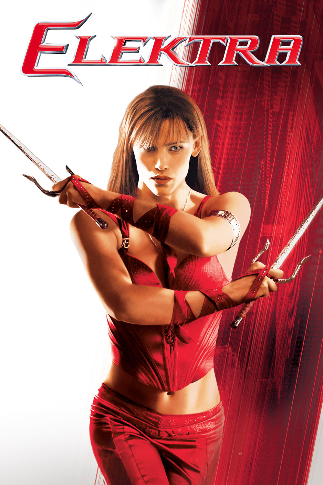

Мировая премьера: 14 января 2005
Слоган: Рождена, чтобы воевать. Живёт, чтобы убивать.
Сюжет: Когда-то она воскресла и овладела способностью видеть будущее, благодаря чему она может на шаг опережать своих врагов. Но Электра не смогла совладать с тёмными силами своей души и стала беспощадной убийцей. Теперь она изменилась. Её партнёрами на нелёгком пути противостояния жестокому миру стали слепой преподаватель боевых искусств Стик и семейство Миллеров – Марк и его дочь Эбби, которые вынуждены спасаться бегством от могущественного клана "Руки".
Режиссёр: Роб Боумен
Сценаристы: Зак Пенн, Стюарт Зихерман, Рэйвен Метцнер
В основе: Комиксы об Электре (США, выходят с 1981, автор – Фрэнк Миллер)
Серия: Сорвиголова
В ролях: |
Дженнифер Гарнер | Электра Начиос |
| Кирстен Праут | Эбби Миллер | |
| Горан Вишнич | Марк Миллер | |
| Теренс Стэмп | Стик | |
| Уилл Юн Ли | Кириги | |
| Колин Каннингэм | МакКейб | |
| Кэри-Хироюки Тагава | Роси | |
| Джейсон Айзекс | ДеМарко | |
| Наташа Мальте | Чума | |
| Боб Сапп | Стоун |
Бюджет: $ 43 млн.
Кассовые сборы в США: $ 24 млн.
Кассовые сборы в мире: $ 57 млн.
Продолжительность: 1 ч. 29 мин.
Рейтинг: 4.7